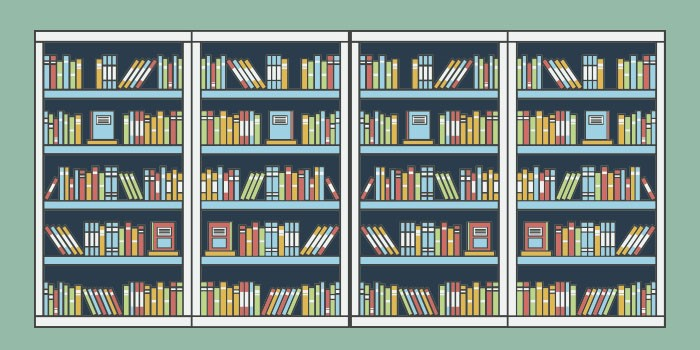

Keuntungan Belajar Pemrograman Secara Online
Saat ini teknologi sangat membantu dalam setiap pergerakan manusia. Kemajuan dalam dunia internet membuat kehidupan semakin mudah dan seakan-akan tanpa jarak. Begitupun dengan aktivitas manusia tak jauh dari hal yang dilaksanakan secara online, sebut saja online banking, online shop, meeting online, termasuk kegiatan belajar pemrograman pun bisa secara online. Sebagian orang lebih memilih untuk belajar pemrograman secara online dibandingkan offline. Hal ini karena belajar online memiliki beberapa keuntungan yang tidak didapatkan dari kegiatan belajar pemrograman offline. Beberapa keuntungan inilah yang akan pertimbangan Anda untuk memilih mengikuti kegiatan belajar pemrograman online. Berikut adalah 5 keuntungan belajar pemrograman secara online:
Waktu dan Tempat yang Fleksibel
Dalam kegiatan belajar pemrograman online, kita dapat menyesuaikan kapan dan dimana Anda akan melakukan belajar pemrograman online. Kita bisa melakukannya di kamar, di ruang makan, bahkan bisa sambil ngopi di caffe. Belajar online hanya memerlukan waktu dan tempat agar dapat melakukannya. Kegiatan belajar online sangat cocok untuk seseorang yang sibuk karena sudah memiliki kegiatan lain misalnya yang sudah bekerja atau pelajar yang masih sekolah. Hal ini karena kegiatan belajar pemrograman online dapat dilaksanakan dimanapun dan kapanpun, maka memungkinkan Anda untuk belajar kapan saja saat memiliki waktu luang yang dapat dipakai. Perlu diingat kegiatan belajar pemrograman ini jangan dipakai untuk menggantikan waktu istirahat Anda. Karena istirahat pun itu sangat penting untuk dilakukan.
Biaya yang digunakan lebih sedikit
Selain waktu dan tempat yang digunakan fleksibel, keuntungan lainnya yaitu biaya yang digunakan lebih sedikit. Jika dalam mengikuti pelatihan pemrograman ataupun kursus offline Anda perlu mengeluarkan banyak biaya, seperti biaya pendaftaran, biaya ongkos, bahkan jika pelatihan tersebut diluar kota, kita harus mengeluarkan biaya untuk penginapan dan sebagainya. Untuk kegiatan pembelajaran online Anda hanya akan mengeluarkan biaya jauh lebih sedikit jika dibandingkan dengan mengikuti pelatihan ataupun mengikuti kursus offline. Mungkin saja biaya yang dikeluarkan hanya untuk kuota dikarenakan mengikuti pembelajaran harus memiliki koneksi internet, ataupun biaya untuk membeli modul yang tentunya materi yang tersedia adalah materi terstruktur yang akan menunjang kegiatan belajar pemrograman Anda dimulai dari dasar sampai Anda benar benar ahli dalam pemrograman.
Dapat disesuaikan dengan kemampuanmu
Jangan khawatir jika belajar pemrograman secara online. Karena materi yang tersedia dapat disesuaikan dengan kemauanmu. Jika Anda baru saja menggeluti dunia pemrograman atau biasa disebut pemula, Anda bisa memilih belajar dari dasar pemrograman. Tentu selain menghemat waktu, Anda pun bisa menghemat biaya karena materi yang dipelajari langsung sesuai dengan kemampuan dan bakat Anda. Anda tidak perlu khawatir untuk materi yang anda cari, Anda dapat menemukannya di website Codepolitan. Materi yang tersedia tentu sangat lengkap. selain itu, ada pula forum tanya jawab dan belajar menggunakan studi kasus. Untuk forum tanya jawab, Anda jadi tidak perlu khawatir jika anda tidak mengerit dnegan materi yang disampaikan, Anda dapat menanyakan materi tersebut di forum tanya jawab dan tim Codepolitan akan siap menjawab pertanyaan tersebut.
Tidak ada Batasan
Dalam kegiatan belajar pemrograman offline, waktu adalah salah satu masalah yang harus dihadapi peserta dan instruktur dalam belajar. Pada pembelajaran tatap muka, lokasi membatasi beberapa peserta untuk hadir berpartisipasi orang-orang untuk hadir pada waktu tertentu. Hal ini pun dapat berpengaruh pada biaya yang dikeluarkan oleh Anda. Pada kegiatan belajar pemrograman online, pembelajaran dapat dilukan kapanpun, dimanapun tanpa adanya batasan dimana setiap orang yang tertarik dapat hadir pada kegiatan pembelajaran online tersebut. Tentu kegiatan belajar pemrograman secara online ini sangat memudahkan setiap orang yang ingin mengikuti belajar pemrograman tetapi terkendala dalam hal lokasi, biaya dan waktu.
Materi Terstruktur

Pada kegiatan belajar pemrograman online, kelengkapan materi juga menjadi suatu keuntungan yang diapatkan. Coba saja lihat di Codepolitan, pada web tersebut terdapat materi-materi untuk belajar pemrograman secara tersusun dan lengkap. Materi terstruktur dapat membantu agar seseorang tidak kebingungan disaat melakukan belajar pemrograman secara online.